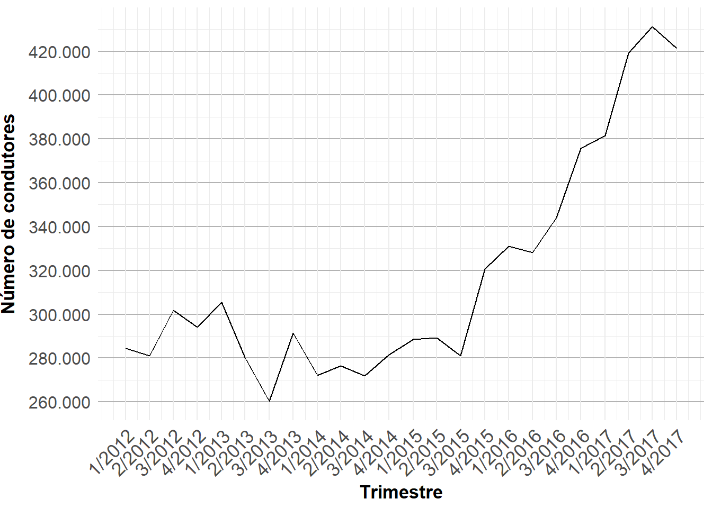
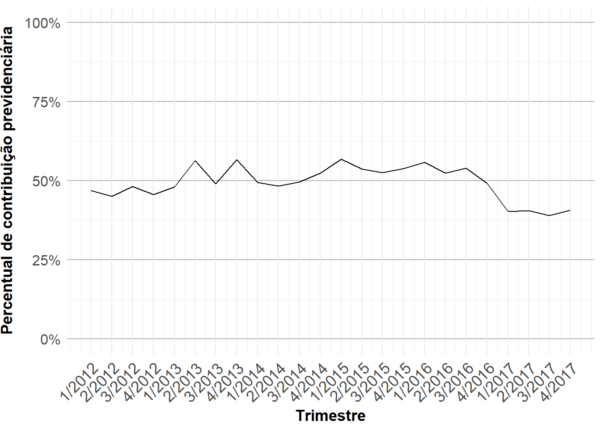
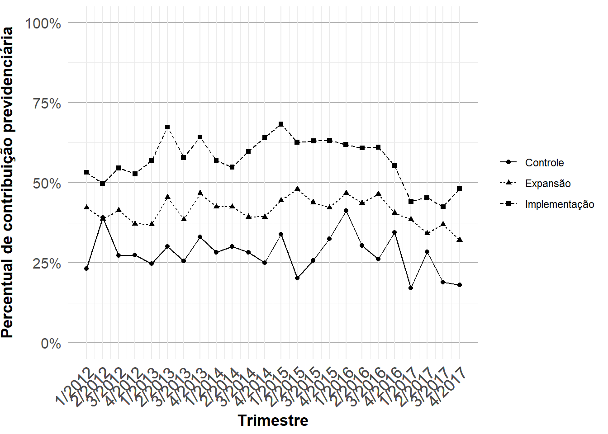
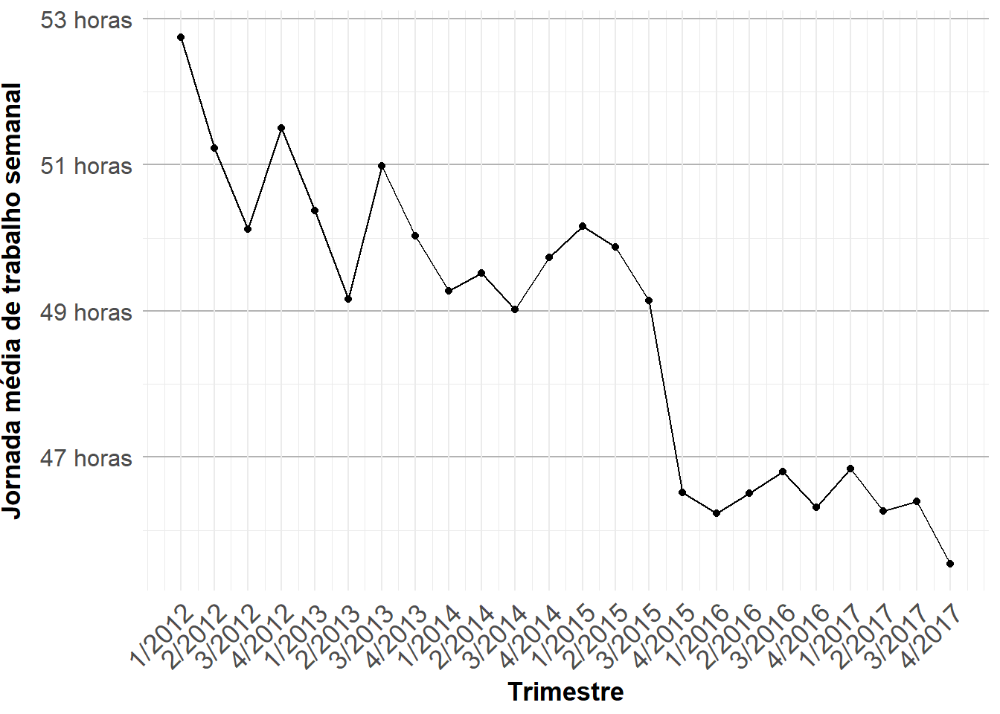
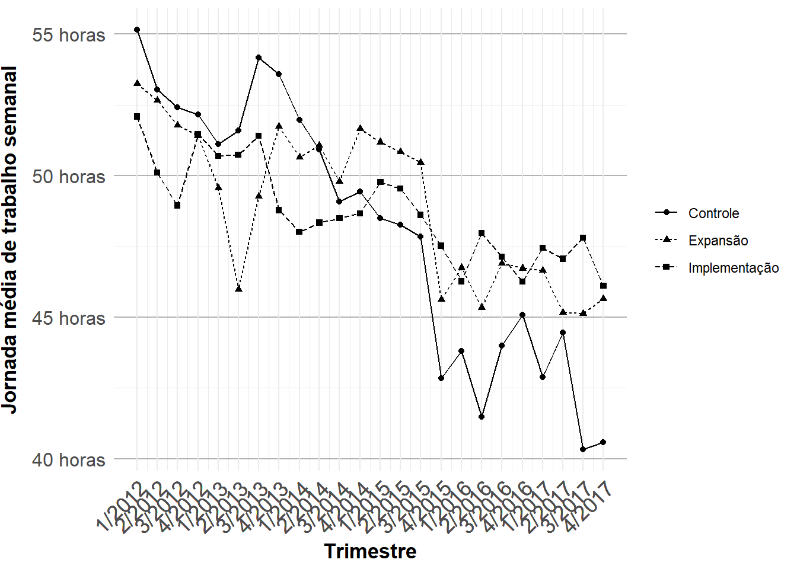

library(PNADcIBGE)
library(tidyverse)
library(openxlsx)
library(readxl)
library(writexl)
library(did)
library(lmtest)
library(sandwich)Analisando efeitos de aplicativos de transporte nas condições de trabalho de condutores nas capitais brasileiras.
Este estudo tem como objetivo principal analisar os impactos das plataformas digitais de transporte de passageiros e entregas nas condições de trabalho dos condutores nas capitais brasileiras. A pesquisa investiga duas dimensões específicas das condições de trabalho: a formalização, medida pela taxa de contribuição previdenciária, e a duração da jornada de trabalho. A hipótese central, baseada na literatura, é que a entrada desses aplicativos no mercado de trabalho resultou em uma piora das condições de trabalho, especificamente através de uma redução na taxa de contribuição para a previdência e um aumento na jornada média de trabalho (Firat, 2021; Lopes, 2022; Abilio e Santiago, 2024; Carvalho e Nogueira, 2024).
Para testar essa hipótese, foi realizada uma análise quantitativa utilizando microdados da Pesquisa Nacional por Amostra de Domicílios Contínua (PNAD Contínua), agregados por capital, para o período do primeiro trimestre de 2012 ao último de 2017. A metodologia econométrica empregada inclui a estimação de modelos de Diferenças em Diferenças (Diff-in-Diff), sendo adequado para avaliar o impacto de uma intervenção.
Este documento detalha o processo de análise de dados, desde a extração e tratamento dos microdados até a estimação dos modelos econométricos propostos.
A análise é produto do meu trabalho de monografia do curso de Ciências Econômicas na Universidade Federal de Goiás (UFG). Caso identifique algum erro no script ou tenha eventuais dúvidas, só enviar e-mail para: alef.santos62@hotmail.com. Também estou disponível para consultorias e trabalhos em análise e ciência de dados. Meu perfil linkedin é: linkedin.com/in/alefsantos42/
Abaixo, abriremos as bibliotecas que serão úteis no desenvolvimento do script.
1. Montando base de dados
Esta seção refere-se à construção da base de dados. O processo inicia-se com a extração e tratamento dos microdados da PNAD Contínua e conclui-se com a criação de uma função para automatizar a coleta para múltiplos períodos, garantindo a replicabilidade do estudo.
1.1. Levantamento de dados
A primeira coisa a ser realizada é o download dos dados da Pnad-C, para isso utilizaremos a função get_pnad da biblioteca PNADcIBGE . Informaremos como parâmetros o ano, trimestre, variáveis (esta parte é especialmente importante para termos uma base de dados mais leve).
E também definiremos FALSE para o parâmetro design , dessa forma obteremos os microdados em dataframe (torna a leitura dos dados mais fácil). No entanto, é recomendado TRUE, obtendo um objeto da classe survey.design, para trabalhar com análises inferenciais da população. Para fins deste trabalho, usaremos a variável V1028 como peso populacional.
Utilizaremos como exemplo o primeiro trimestre do ano de 2015.
*Consulte dicionário da PnadC para saber a definição de cada variável.
#carregando os dados
base_pnadc <- get_pnadc(2015, 1, vars=c("VD4016","V4013", "V4010", "VD4009", "VD4012", "V4039C", "VD4013", "Capital", "VD4002", "VD4001", "V1028", "VD4032", "VD3004", "V2009", "V4039"), design = FALSE)A pesquisa da PnadC realiza entrevista com residentes de diversos municípios. No entanto, apenas os residentes das capitais têm sua localização municipal identificada. Para ilustrar isso, a variável Capital do dataframe base_pnadc tem valores ausentes na ocorrência de domicílios não situados em capitais. E isto justifica a restrição da análise da monografia às capitais.
Com isso, iremos padronizar a variável Capital através da função gsub , removendo o prefixo “Município de”. E em seguida, filtraremos todas as observações que sejam diferentes de valores vazios na variável (missings).
base_tratada <- base_pnadc %>%
mutate(Capital = gsub("Município de ", "", Capital)) %>%
filter(!is.na(Capital))
base_tratada %>%
count()Este resultado retornou 132.876 indivíduos que residem em domocílios situados em capitais.
A seguir, iremos identificar os condutores.
1.1.1. Número de condutores e percentual de contribuição
Para analisar os efeitos do Uber sobre o percentual de contribuintes, é necessário identificar os trabalhadores ou que estejam sobre influência deste mercado. Portanto, é selecionado Condutores de automóveis, taxis e caminhonetes (8322) ou Condutores de motocicletas (8321), conforme Classificação de Ocupações para as Pesquisas Domiciliares (COD). E que trabalhem nas atividades de Transporte rodoviário de passageiros (49030) ou Atividades de malote e de entrega (53002), conforme Classificação Nacional de Atividades Econômicas Domiciliar 2.0 (CNAE).
Além disto, filtraremos indivíduos com idade maior de 18 anos.
Por fim, iremos estimar quantas pessoas com as características mencionadas existem em cada capital, considerando o peso populacional V1028 . E observaremos quantos deles contribuem com a previdência social, calculando o percentual de contribuintes.
#filtrando os condutores e atividades
condutores_1 <- base_tratada %>%
filter(V2009 >= 18) %>%
filter(V4013 %in% c("49030", "53002") & V4010 %in% c("8322", "8321"))
cat("Número de entrevistados:", nrow(condutores_1), "\n")
#calculando contribuição previdenciária
condutores_2 <- condutores_1 %>%
group_by(Ano, Trimestre, Capital, VD4012) %>%
summarise(total = sum(V1028, na.rm = TRUE), .groups = "drop") %>%
mutate(VD4012 = gsub("Não contribuinte", "Nao_contribuinte", VD4012)) %>%
pivot_wider(names_from = VD4012, values_from = total, values_fill = 0) %>%
mutate(contribuinte_previdencia = Contribuinte / (Contribuinte + Nao_contribuinte))
cat("Estimativa populacional:", sum(condutores_1$V1028))Como pode ser visto acima, o número de pessoas entrevistadas que corresponderam as condições no primeiro trimestre de 2015 em todo o Brasil foi um total de 773. E estima-se que haja 276.275 pessoas no Brasil com tais características.
1.1.2. Jornada de trabalho
Abaixo, é estimada a carga horária média de trabalho semanal dos condutores por capital, ponderada pelo peso populacional V1028.
#estimando a jornada média semanal de trabalho
horas_trabalho <- base_tratada %>%
filter(V4013 %in% c("49030", "53002") & V4010 %in% c("8322", "8321")) %>%
filter(V2009 >= 18) %>%
group_by(Ano, Trimestre, Capital) %>%
summarise(
horas_trabalho = weighted.mean(V4039, V1028, na.rm = TRUE),
.groups = "drop")1.1.3. Taxa de desocupação/desemprego
A seguir será calculada a taxa de desocupação das capitais. Para isso, filtraremos apenas pessoas que estejam na força de trabalho e que tenham respondido a variável VD4002, no qual identifica se no momento o indivíduo está ocupado ou desocupado, com isso calculamos o percentual de desocupação. O parâmetro wt da função count, é utilizada para declarar o peso populacional.
desemprego <- base_tratada %>%
group_by(Ano, Trimestre, Capital) %>%
filter(VD4001 == "Pessoas na força de trabalho" & VD4002 != "(Missing)") %>%
count(VD4002, wt = V1028) %>%
mutate(taxa_desemprego = n / sum(n) * 100) %>%
filter(VD4002 == "Pessoas desocupadas") %>%
select(Capital, taxa_desemprego, Ano, Trimestre)1.1.4. Percentual com ensino superior
Abaixo, estimaremos o percentual de pessoas com ensino superior nas capitais. Para isso, primeiro filtraremos apenas os que responderam a variável de escolaridade VD3004. E também idade entre 18 e 65 anos. E por fim, estimaremos a população da cidade com tal idade, e quantas delas possuem ensino superior completo.
ensino_superior <- base_tratada %>%
filter(V2009 >= 18 & V2009 <= 65) %>%
filter(!is.na(VD3004)) %>%
group_by(Capital, Ano, Trimestre) %>%
summarise(
total_pop = sum(V1028, na.rm = TRUE),
total_superior = sum(V1028[VD3004 == "Superior completo"], na.rm = TRUE),
perc_superior = (total_superior / total_pop) * 100
) |>
filter(!is.na(Capital))1.2. Automoção através de definição de função
Todo o processo realizado acima, será automizada através da definição da função analisando_pnad com os parâmetros do ano e trimestre. E por fim, através da função left_join, iremos consolidar todas as informações em um único dataframe.
analisando_pnad <- function(ano, trimestre) {
#baixando os dados
base_pnadc <- get_pnadc(ano, trimestre, vars=c("VD4016","V4013", "V4010", "VD4009", "VD4012", "V4039C", "VD4013", "Capital", "VD4002", "VD4001", "V1028", "VD4032", "VD3004", "V2009", "V4039"), design = FALSE)
#tratando os dados
base_tratada <- base_pnadc %>%
mutate(Capital = gsub("Município de ", "", Capital)) %>%
filter(!is.na(Capital))
#estimando os condutores e o percentual de contribuição
condutores <- base_tratada %>%
filter(V2009 >= 18) %>%
filter(V4013 %in% c("49030", "53002") &
V4010 %in% c("8322", "8321")) |>
group_by(Ano, Trimestre, Capital, VD4012) %>%
summarise(total = sum(V1028, na.rm = TRUE), .groups = "drop") |>
mutate(VD4012 = gsub("Não contribuinte",
"Nao_contribuinte", VD4012)) %>%
pivot_wider(names_from = VD4012, values_from = total,
values_fill = 0) %>%
mutate(contribuinte_previdencia = Contribuinte /
(Contribuinte + Nao_contribuinte))
#estimando a jornada média semanal de trabalho
horas_trabalho <- base_tratada %>%
filter(V4013 %in% c("49030", "53002") & V4010 %in% c("8322", "8321")) %>%
filter(V2009 >= 18) %>%
group_by(Ano, Trimestre, Capital) %>%
summarise(
horas_trabalho = weighted.mean(V4039, V1028, na.rm = TRUE),
.groups = "drop"
)
#calculando a taxa de desemprego
desemprego <- base_tratada %>%
group_by(Ano, Trimestre, Capital) %>%
filter(VD4001 == "Pessoas na força de trabalho" &
VD4002 != "(Missing)") %>%
count(VD4002, wt = V1028) %>%
mutate(taxa_desemprego = n / sum(n) * 100) %>%
filter(VD4002 == "Pessoas desocupadas") %>%
select(Capital, taxa_desemprego, Ano, Trimestre)
#calculando percentual da população adulta com ensino superior
ensino_superior <- base_tratada %>%
filter(V2009 >= 18 & V2009 <= 65) %>%
filter(!is.na(VD3004)) %>%
group_by(Capital, Ano, Trimestre) %>%
summarise(
total_pop = sum(V1028, na.rm = TRUE),
total_superior = sum(V1028[VD3004 == "Superior completo"], na.rm = TRUE),
perc_superior = (total_superior / total_pop) * 100
) |>
filter(!is.na(Capital))
#juntando em um único dataframe
resultado_final <- condutores |>
left_join(horas_trabalho, by = c("Ano", "Trimestre", "Capital")) %>%
left_join(desemprego, by = c("Ano", "Trimestre", "Capital")) |>
left_join(ensino_superior, by = c("Ano", "Trimestre", "Capital"))
return(resultado_final)
}Abaixo, iremos aplicar a função definida acima, para observar se está sendo executada corretamente.
resultado_2015_1 <- analisando_pnad(2015, 1)1.2.1. Criando loop para gerar dados de diversos anos
A seguir iremos criar um loop para que a função seja executada para todos os trimestres dos anos de 2012 à 2017. Primeiro criaremos um dataframe vazio que irá receber os resultados de cada vez que a função for executada. Depois para cada ano, será executado os trimestres de 1 a 4. E por fim, armazaremos o resultado no dataframe vazio.
options(timeout = 600)
resultado_total <- data.frame()
# Loop para os anos e trimestres
for (ano in 2016:2017) {
for (trimestre in 1:4) {
# Chama a função para o ano e trimestre atuais
resultado <- analisando_pnad(ano, trimestre)
# Adiciona o resultado ao data frame total
resultado_total <- bind_rows(resultado_total, resultado)
}
}
#write.xlsx(resultado_4, "~/Projeto Monografia/Dados/dados_backup.xlsx")A seguir, adicionaremos mais duas variáveis que também servirão como controle.
1.2.2. Agregando variável PIB per capita
A primeira é o PIB per capita, que foi calculado a partir da divisão do PIB a preços correntes do ano pela estimativa populacional do município no trimestre. Utilizaremos a função left_join para juntar ao dataframe principal.
#carregando os dados
pib_per_capita <- read_excel("C:/Users/HP I3/OneDrive/Documentos/Projeto Monografia/Dados/pib_per_capita.xlsx")
resultado_total_2 <- resultado_total %>%
mutate(Ano = as.numeric(Ano),
Trimestre = as.numeric(Trimestre)) %>%
left_join(pib_per_capita, by = c("Ano","Trimestre","Capital"))1.2.3. Agregando taxa de acidentes por 100 mil hab.
A taxa de acidentes de trânsito por 100 mil habitantes foi coletada do Instituto de Pesquisa Econômica Aplicada (IPEA)
A estrutura dos dados tem duas complexidades que precisam ser tratadas, a primeira delas é filtrar apenas os municípios que são capitais. E a segunda, é alterar a estrutura para dados longos através da função pivot_longer, isto é, em vez dos anos estarem dispostos como colunas, serem transformadas em linhas.
#carregando os dados
acidentes <- read_excel("C:/Users/HP I3/OneDrive/Documentos/Projeto Monografia/Dados/acidentes.xlsx")
#gerando vetor com nome das capitais
capitais <- resultado_total_2 %>%
distinct(Capital) %>%
pull()
#filtrando as capitais e transformando em dados longos
acidentes <- acidentes %>%
mutate(Município = paste0(Município," (",Sigla,")")) %>%
filter(Município %in% capitais) %>%
select(-Sigla, -Codigo) %>%
pivot_longer(cols = 2:12,
names_to = "Ano",
values_to = "taxa_acidentes"
) %>%
mutate(Ano = as.numeric(Ano))
#juntando à base
resultado_completo <- resultado_total_2 %>%
left_join(acidentes, by = c("Ano", "Capital" = "Município"))2. Análise descritiva
Nessa seção observaremos as estimativas históricas de condutores nas capitais brasileiras e as variáveis dependentes, primeiro agregando todas as capitais, e postiormente por fase de inserção da plataforma no mercado brasileiro e grupo de controle, dividindo-se da seguinte forma:
Fase de implementação: contempla as primeiras capitais a terem aplicativos de transporte e/ou entregas, entrantes do período 11 e 13 conforme o quadro abaixo.;
Fase de expansão: refere-se às capitais do período 18, 19, 20, 21 e 22, conforme quadro abaixo.
Grupo de controle: as capitais que receberam plataforma em 2017 e que são instrumentalizadas como grupo de controle.
Capitais Trimestre de início (Time) Rio de Janeiro, São Paulo mar/14 (11) Belo Horizonte; Brasília; Porto Alegre jan/15 (13) Recife; Curitiba; Salvador; Fortaleza, Goiânia, Natal mar/16 (19) Florianópolis; Vitória; João Pessoa; Campo Grande; Maceió; Cuiabá jan/17 (21) Aracaju; Teresina; Belém; São Luís fev/17 (22) Palmas; Manaus; Porto Velho; Boa Vista; Macapá; Rio Branco Controle
O time é uma contagem temporal que varia entre o primeiro trimestre de 2012 e o último de 2017, totalizando 24 períodos. Portanto, o segundo trimestre de 2014 (mar/14), refere-se ao time 11.
2.1. Tratamento dos dados
A seguir iremos definir os períodos de ínicio de operação das plataformas nas capitais. Depois criaremos a variável grupo, dividindo as capitais em implementação, expansão e controle. E por fim, definiremos a variável de data.
#Time de início de cada capital
time_capitais <- tribble(
~Capital, ~periodo_inicio,
"Rio de Janeiro (RJ)", 11,
"São Paulo (SP)", 11,
"Belo Horizonte (MG)", 13,
"Brasília (DF)", 13,
"Porto Alegre (RS)", 13,
"Goiânia (GO)", 19,
"Recife (PE)", 19,
"Curitiba (PR)", 19,
"Salvador (BA)", 19,
"Fortaleza (CE)", 19,
"Natal (RN)", 19,
"Florianópolis (SC)", 21,
"Vitória (ES)", 21,
"João Pessoa (PB)", 21,
"Campo Grande (MS)", 21,
"Maceió (AL)", 21,
"Cuiabá (MT)", 21,
"Aracaju (SE)", 22,
"Teresina (PI)", 22,
"Belém (PA)", 22,
"São Luís (MA)", 22,
"Palmas (TO)", NA,
"Manaus (AM)", NA,
"Porto Velho (RO)", NA,
"Boa Vista (RR)", NA,
"Macapá (AP)", NA,
"Rio Branco (AC)", NA,
)
data_descritivo <- resultado_completo %>%
left_join(time_capitais, by = "Capital") %>%
mutate(grupo = case_when(periodo_inicio %in% c(11,13) ~ "Implementação",
periodo_inicio %in% c(19,21,22) ~ "Expansão",
TRUE ~ "Controle"),
data_trimestre = yq(paste0(Ano, "/", Trimestre)),
label_trimestre = paste0(Trimestre, "/", Ano))
write.xlsx(data_descritivo,"C:/Users/HP I3/OneDrive/Documentos/Projeto Monografia/Dados/data_descritivo.xlsx")2.2. Estimativa de condutores nas capitais
Abaixo, iremos estimar o número de condutores nas capitais brasileiras e em seguida plotar o gráfico e observar a série histórica.
data_descritivo <- read_excel("C:/Users/HP I3/OneDrive/Documentos/Projeto Monografia/Dados/data_descritivo.xlsx") %>%
mutate(data_trimestre = as.Date(data_trimestre))
numero_condutores <- data_descritivo %>%
select(data_trimestre, label_trimestre, Contribuinte, Nao_contribuinte) %>%
group_by(data_trimestre, label_trimestre) %>%
summarise(condutores = sum(Contribuinte + Nao_contribuinte))`summarise()` has grouped output by 'data_trimestre'. You can override using
the `.groups` argument.numero_condutores %>%
ggplot(aes(x = data_trimestre,
y = condutores)) +
geom_line() +
ylab("Número de condutores") +
xlab("Trimestre") +
scale_x_date(breaks = numero_condutores$data_trimestre,
labels = numero_condutores$label_trimestre) +
scale_y_continuous(breaks = seq(0, max(numero_condutores$condutores),
by = 20000),
labels = scales::label_comma(big.mark = ".")) +
theme_minimal() +
theme(axis.text.x = element_text(size = 13,
angle = 45,
hjust = 1),
axis.title.x = element_text(size = 13,
face = "bold",
vjust = 0.5),
axis.text.y = element_text(size = 12),
axis.title.y = element_text(size = 13,
face = "bold",
vjust = 3),
panel.grid.major.y = element_line(color = "gray70"))Warning in prettyNum(.Internal(format(x, trim, digits, nsmall, width, 3L, :
'big.mark' and 'decimal.mark' are both '.', which could be confusing
Observa-se que até o terceiro trimestre de 2015, a quantidade varia de aproximadamente 260.000 à 300.000, indicando certa estabilidade. No entanto, após esse período a quantidade cresce acentuadamente até alcançar o pico de 444.000 no terceiro trimestre de 2017, um aumento de aproximadamente 56% em dois anos.
2.3. Contribuição previdenciária
A seguir observaremos a série histórica da controbuição das capitais.
contribuicao_serie <- data_descritivo %>%
select(data_trimestre, label_trimestre, Contribuinte, Nao_contribuinte) %>%
group_by(data_trimestre, label_trimestre) %>%
summarise(contribuintes = sum(Contribuinte),
nao_contribuintes = sum(Nao_contribuinte)) %>%
mutate(perc_contribuicao = contribuintes/(contribuintes + nao_contribuintes))`summarise()` has grouped output by 'data_trimestre'. You can override using
the `.groups` argument.contribuicao_serie %>%
ggplot(aes(x = data_trimestre,
y = perc_contribuicao)) +
geom_line() +
ylab("Percentual de contribuição previdenciária") +
xlab("Trimestre") +
scale_x_date(breaks = contribuicao_serie$data_trimestre,
labels = contribuicao_serie$label_trimestre) +
scale_y_continuous(labels = scales::percent_format(accuracy = 1),
limits = c(0,1)) +
theme_minimal() +
theme(axis.text.x = element_text(size = 13,
angle = 45,
hjust = 1),
axis.title.x = element_text(size = 13,
face = "bold",
vjust = 0.5),
axis.text.y = element_text(size = 12),
axis.title.y = element_text(size = 13,
face = "bold",
vjust = 3),
panel.grid.major.y = element_line(color = "gray70"))
A análise pode ser dividida em três períodos: antes do início das operações da Uber, fase de implementação e expansão. Noprimeiro período que vai até o segundo trimestre de 2014, o percentual sai da mínima histórica em 2/2012 de 45% e chega a 48% em 2/2014. No entanto, com grau de variabilidade de 11 pontos percentuais entre a mínima e máxima nesse intervalo de tempo. O segundo período que vai até o primeiro trimestre de 2016 é marcado pelo crescimento de contribuintes, que inicia em 3/2014 em 50% e finaliza com 56% e com uma variabilidade de 7 pontos percentuais entre a mínima e máxima do intervalo analisado. E por fim, no terceiro período, após 5 trimestres sem iniciar em novas cidades, apresenta uma queda vertiginosa no percentual de contribuição previdenciária. Iniciando o segundo trimestre de 2016 com 52% e renovando a mínima histórica em 3/2017 com 39%, encerrando 2017 presente em todas as capitais com 41%.
Abaixo, analisaremos a contribuição desagregada pelas grupos.
contribuicao_serie_grupos <- data_descritivo %>%
select(data_trimestre, label_trimestre, Contribuinte, Nao_contribuinte, grupo) %>%
group_by(data_trimestre, label_trimestre, grupo) %>%
summarise(contribuintes = sum(Contribuinte),
nao_contribuintes = sum(Nao_contribuinte)) %>%
mutate(perc_contribuicao = contribuintes/(contribuintes + nao_contribuintes))`summarise()` has grouped output by 'data_trimestre', 'label_trimestre'. You
can override using the `.groups` argument.contribuicao_serie_grupos %>%
ggplot(aes(x = data_trimestre,
y = perc_contribuicao,
linetype = grupo,
shape = grupo)) +
geom_point() +
geom_line() +
ylab("Percentual de contribuição previdenciária") +
xlab("Trimestre") +
scale_x_date(breaks = contribuicao_serie_grupos$data_trimestre,
labels = contribuicao_serie_grupos$label_trimestre) +
scale_y_continuous(labels = scales::percent_format(accuracy = 1),
limits = c(0,1)) +
theme_minimal() +
theme(axis.text.x = element_text(size = 13,
angle = 45,
hjust = 1),
axis.title.x = element_text(size = 13,
face = "bold",
vjust = 0.5),
axis.text.y = element_text(size = 12),
axis.title.y = element_text(size = 13,
face = "bold",
vjust = 3),
panel.grid.major.y = element_line(color = "gray70"),
legend.title = element_blank())
No período que antecedeu a intervenção, observou-se um aumento na cobertura previdenciária dos condutores do grupo de implementação, passando de 50% para 60% no terceiro trimestre de 2014. E após isso, manteve-se com relativa estabilidade até o terceiro trimestre de 2016. A partir disto, apresenta trajetória de queda, atingindo a mínima de 43% em 3/2017. Com relação ao grupo de expansão, o início da série analisada tem uma mínima de 37% no último trimestre de 2013 e o percentual, na média, cresce até chegar à 47% em 3/2016, um trimestre após a entrada da Uber. E em seguida apresenta tendência de queda, renovando a mínima em 32% no último trimestre de 2017. As capitais utilizadas como grupo de controle apresenta alto grau de variabilidade no percentual, apesar disso, após o último trimestre de 2016, a média do percentual de condutores contribuintes entra em convergência de queda.
2.4. Jornada média de trabalho
Iremos agora analisar a jornada média de trabalho, seguindo a mesma lógica da contribuição previdenciária.
jornada_trabalho_serie <- data_descritivo %>%
mutate(total_condutores = Contribuinte + Nao_contribuinte) %>%
select(data_trimestre, label_trimestre, total_condutores, horas_trabalho) %>%
group_by(data_trimestre, label_trimestre) %>%
summarise(jornada_media = weighted.mean(horas_trabalho, total_condutores))`summarise()` has grouped output by 'data_trimestre'. You can override using
the `.groups` argument.jornada_trabalho_serie %>%
ggplot(aes(x = data_trimestre,
y = jornada_media)) +
geom_line() +
geom_point() +
ylab("Jornada média de trabalho semanal") +
xlab("Trimestre") +
scale_x_date(breaks = jornada_trabalho_serie$data_trimestre,
labels = jornada_trabalho_serie$label_trimestre) +
scale_y_continuous(labels = function(x) paste0(x, " horas")) +
theme_minimal() +
theme(axis.text.x = element_text(size = 13,
angle = 45,
hjust = 1),
axis.title.x = element_text(size = 13,
face = "bold",
vjust = 0.5),
axis.text.y = element_text(size = 12),
axis.title.y = element_text(size = 13,
face = "bold",
vjust = 3),
panel.grid.major.y = element_line(color = "gray70"))
A máxima histórica foi registrada no primeiro trimestre de 2012 com jornada média de 53 horas de trabalho semanais. Desde então, o comportamento é de declínio e observa-se um choque entre os dois últimos trimestres de 2015, uma diminuição de 49 para 45 horas. E por fim, finda o ano de 2017 com a mínima registrada de 45 horas.
A seguir, observamos a série agregada por grupos.
jornada_trabalho_serie_grupos <- data_descritivo %>%
mutate(total_condutores = Contribuinte + Nao_contribuinte) %>%
select(data_trimestre, label_trimestre, total_condutores, horas_trabalho, grupo) %>%
group_by(data_trimestre, label_trimestre, grupo) %>%
summarise(jornada_media = weighted.mean(horas_trabalho, total_condutores))`summarise()` has grouped output by 'data_trimestre', 'label_trimestre'. You
can override using the `.groups` argument.jornada_trabalho_serie_grupos %>%
ggplot(aes(x = data_trimestre,
y = jornada_media,
linetype = grupo,
shape = grupo)) +
geom_line() +
geom_point() +
ylab("Jornada média de trabalho semanal") +
xlab("Trimestre") +
scale_x_date(breaks = jornada_trabalho_serie_grupos$data_trimestre,
labels = jornada_trabalho_serie_grupos$label_trimestre) +
scale_y_continuous(labels = function(x) paste0(x, " horas")) +
theme_minimal() +
theme(axis.text.x = element_text(size = 13,
angle = 45,
hjust = 1),
axis.title.x = element_text(size = 13,
face = "bold",
vjust = 0.5),
axis.text.y = element_text(size = 12),
axis.title.y = element_text(size = 13,
face = "bold",
vjust = 3),
panel.grid.major.y = element_line(color = "gray70"),
legend.title = element_blank())
As capitais referentes ao grupo de implementação, inicia a séria histórica com média de 51 horas, e reduz à 49 horas no trimestre que marca o início dos aplicativos de transporte. A partir disso diminui até o quarto trimestre de 2015, e em seguida se mantem com estabilidade entre 46 e 47 horas semanais. O grupo de expansão inicia a série histórica com média de 52 horas e apresenta diminuição de forma mais persistente a partir do último trimestre de 2014, atingindo média de 45 horas em 4/2015, e após um breve período de aumento da jornada, finaliza 2017 com jornada de trabalho semanal de 45 horas. As capitais do grupo de controle seguem comportamento semelhante dos demais grupos, inicia a série com 55 horas, apresenta tendência de queda mais moderada até o terceiro trimestre de 2015 atingindo 48 horas, no período seguinte apresenta uma diminuição brusca, e finaliza 2017 com jornada média semanal de 42 horas.
3. Análise econométrica
Após a análise descritiva, esta seção implementa a análise inferencial para testar formalmente as hipóteses do estudo. O impacto das plataformas digitais é estimado através de um modelo de Diferenças em Diferenças (DiD). A análise foca em duas variáveis dependentes, representando as dimensões de condições de trabalho: o percentual de contribuição previdenciária e a jornada média de trabalho semanal.
3.1. Tratamento dos dados
A definição da variável de interesse, que medirá o impacto do Uber sobre as condições de trabalho, será atribuindo valor 1 para todo período posterior à entrada da plataforma, e 0 para os anteriores e para as capitais que são instrumentalizadas como grupo de controle em todo o período. Os marcos são referenciados na tabela abaixo.
| Capitais | Trimestre de início (Time) |
| Rio de Janeiro, São Paulo | mar/14 (11) |
| Belo Horizonte; Brasília; Porto Alegre | jan/15 (13) |
| Recife; Curitiba; Salvador; Fortaleza, Goiânia, Natal | mar/16 (19) |
| Florianópolis; Vitória; João Pessoa; Campo Grande; Maceió; Cuiabá | jan/17 (21) |
| Aracaju; Teresina; Belém; São Luís | fev/17 (22) |
| Palmas; Manaus; Porto Velho; Boa Vista; Macapá; Rio Branco | Controle |
Primeiro é necessário criar a variável time para marcar os períodos, um total de 24, compreendendo o primeiro trimestre de 2012 e o último de 2017. O time de determinando período pode ser obtido multiplicando o número de trimestres transcorridos anualmente mais o número do atual trimestre. A título de exemplo, o terceiro trimestre de 2014:
Ano de início dos dados: 2012
Ano atual: 2014
2014 - 2012 = 2
Anos * trimestres = 2 *4 = 8
Trimestres transcorridos + trimestre atual = 8 + 3 = 11
#Definindo variável time (Período)
dados_analise <- data_descritivo %>%
mutate(time = ((Ano - min(Ano)) * 4 + Trimestre))
#Definindo variável de tratamento
dados_analise <- dados_analise %>%
mutate(tratado_controle = case_when(is.na(periodo_inicio) ~ 0,
TRUE ~ 1)) %>%
mutate(tratamento = case_when(time >= periodo_inicio ~ 1,
TRUE ~ 0))Por fim, no bloco abaixo, iremos aplicar logaritmo tanto nas variáveis depedentes, quanto nas de controle.
dados_analise$contribuinte_previdencia <- dados_analise$contribuinte_previdencia + 0.0001
dados_analise_final <- dados_analise %>%
mutate(across(c(contribuinte_previdencia, horas_trabalho ,taxa_desemprego, perc_superior,
pib_per_capita, taxa_acidentes), log, .names = "ln_{.col}"))
#write_xlsx(dados_analise_final, "C:/Users/HP I3/OneDrive/Documentos/Projeto Monografia/Dados/dados_final.xlsx")3.2. Contribuição previdenciária
A seguir, iremos estimar o efeito dos aplicativos sobre a contribuição previdenciária dos condutores através do modelo de diferenças em diferenças, medido através da variável tratamento definida anteriormente. Além disto, iremos incluir transformar a variável time em dummies para controlar os efeitos fixos de tempo (ou heterogenidade temporal).
Por último, aplicaremos aplicar o teste de significância dos coeficientes com erros-padrão robustos (do tipo White/Huber), obtidos por meio da função vcovHC() com o argumento type = “HC1”. Essa abordagem corrige possíveis violações da hipótese de homocedasticidade, proporcionando estimativas mais consistentes dos erros-padrão e, consequentemente, testes t mais confiáveis.
dados_analise <- read_excel("C:/Users/HP I3/OneDrive/Documentos/Projeto Monografia/Dados/dados_final.xlsx")
# modelo
modelo_contribuicao <- lm(ln_contribuinte_previdencia ~ tratamento + tratado_controle + ln_pib_per_capita + ln_perc_superior + ln_taxa_desemprego + ln_taxa_acidentes + factor(time),
data = dados_analise)
coeftest(modelo_contribuicao, vcov = vcov(modelo_contribuicao, type = "HC1"))
t test of coefficients:
Estimate Std. Error t value Pr(>|t|)
(Intercept) -4.6813481 1.1690063 -4.0046 6.969e-05 ***
tratamento 0.0373176 0.1187564 0.3142 0.753447
tratado_controle 0.1623065 0.0885174 1.8336 0.067192 .
ln_pib_per_capita 0.2312208 0.1270360 1.8201 0.069224 .
ln_perc_superior 0.5200641 0.1607573 3.2351 0.001281 **
ln_taxa_desemprego -0.2184667 0.1081353 -2.0203 0.043782 *
ln_taxa_acidentes -0.0018614 0.0238662 -0.0780 0.937859
factor(time)2 0.0024388 0.2159720 0.0113 0.990994
factor(time)3 0.0200663 0.2160466 0.0929 0.926029
factor(time)4 0.2202812 0.2164363 1.0178 0.309188
factor(time)5 0.2345598 0.2160828 1.0855 0.278120
factor(time)6 0.3691497 0.2161756 1.7076 0.088206 .
factor(time)7 0.1983208 0.2164342 0.9163 0.359862
factor(time)8 0.3086317 0.2171636 1.4212 0.155765
factor(time)9 0.2314581 0.2165626 1.0688 0.285585
factor(time)10 -0.0741160 0.2167827 -0.3419 0.732549
factor(time)11 0.1784320 0.2168705 0.8228 0.410963
factor(time)12 0.1896997 0.2171463 0.8736 0.382674
factor(time)13 0.3374016 0.2174898 1.5513 0.121331
factor(time)14 0.3343545 0.2174788 1.5374 0.124704
factor(time)15 0.3859951 0.2177832 1.7724 0.076824 .
factor(time)16 0.2476529 0.2176689 1.1378 0.255666
factor(time)17 0.3376398 0.2205287 1.5310 0.126270
factor(time)18 0.2932240 0.2212061 1.3256 0.185472
factor(time)19 0.3068559 0.2251241 1.3631 0.173362
factor(time)20 0.2427040 0.2255455 1.0761 0.282313
factor(time)21 0.0839687 0.2338941 0.3590 0.719715
factor(time)22 0.0129761 0.2386844 0.0544 0.956662
factor(time)23 -0.0680702 0.2383045 -0.2856 0.775247
factor(time)24 -0.1687248 0.2376122 -0.7101 0.477919
---
Signif. codes: 0 '***' 0.001 '**' 0.01 '*' 0.05 '.' 0.1 ' ' 1O modelo não identificou impacto das plataformas na informalização dos condutores. Embora tenha havido diminuição no percentual de contribuintes, o fenômeno foi comum e em grau semelhante à todas as capitais, em convergência com os resultados descritivos.
3.3. Jornada de trabalho
O mesmo processo aplicado para contribuição previdencária, será repetido para a jornada média de trabalho no código abaixo.
modelo_jornada_trabalho <- lm(ln_horas_trabalho ~ tratamento + tratado_controle + ln_pib_per_capita + ln_perc_superior + ln_taxa_desemprego + ln_taxa_acidentes + factor(time),
data = dados_analise)
coeftest(modelo_jornada_trabalho, vcov = vcov(modelo_jornada_trabalho, type = "HC1"))
t test of coefficients:
Estimate Std. Error t value Pr(>|t|)
(Intercept) 4.7263234 0.1452571 32.5376 < 2.2e-16 ***
tratamento 0.0398540 0.0147563 2.7008 0.0071067 **
tratado_controle 0.0087062 0.0109989 0.7916 0.4289230
ln_pib_per_capita -0.0667545 0.0157851 -4.2290 2.703e-05 ***
ln_perc_superior 0.0257472 0.0199752 1.2890 0.1978954
ln_taxa_desemprego -0.0607694 0.0134366 -4.5227 7.322e-06 ***
ln_taxa_acidentes -0.0024568 0.0029655 -0.8284 0.4077363
factor(time)2 -0.0339457 0.0268360 -1.2649 0.2063725
factor(time)3 -0.0506870 0.0268453 -1.8881 0.0594785 .
factor(time)4 -0.0813925 0.0268937 -3.0265 0.0025773 **
factor(time)5 -0.0623237 0.0268498 -2.3212 0.0206005 *
factor(time)6 -0.1227577 0.0268613 -4.5701 5.890e-06 ***
factor(time)7 -0.0565024 0.0268934 -2.1010 0.0360478 *
factor(time)8 -0.0671615 0.0269841 -2.4889 0.0130748 *
factor(time)9 -0.0663728 0.0269094 -2.4665 0.0139132 *
factor(time)10 -0.0903018 0.0269367 -3.3524 0.0008502 ***
factor(time)11 -0.0875904 0.0269477 -3.2504 0.0012151 **
factor(time)12 -0.0775012 0.0269819 -2.8723 0.0042143 **
factor(time)13 -0.0732531 0.0270246 -2.7106 0.0069025 **
factor(time)14 -0.0510410 0.0270232 -1.8888 0.0593893 .
factor(time)15 -0.0897652 0.0270611 -3.3171 0.0009628 ***
factor(time)16 -0.2030307 0.0270469 -7.5066 2.127e-13 ***
factor(time)17 -0.1592450 0.0274022 -5.8114 9.928e-09 ***
factor(time)18 -0.1743303 0.0274864 -6.3424 4.370e-10 ***
factor(time)19 -0.1551440 0.0279732 -5.5462 4.332e-08 ***
factor(time)20 -0.1531709 0.0280256 -5.4654 6.707e-08 ***
factor(time)21 -0.1667650 0.0290630 -5.7381 1.501e-08 ***
factor(time)22 -0.1822611 0.0296582 -6.1454 1.430e-09 ***
factor(time)23 -0.1908878 0.0296110 -6.4465 2.307e-10 ***
factor(time)24 -0.1968948 0.0295250 -6.6688 5.730e-11 ***
---
Signif. codes: 0 '***' 0.001 '**' 0.01 '*' 0.05 '.' 0.1 ' ' 1O método de diferenças em diferenças, o resultado indica efeito de aumento na jornada de trabalho em decorrência da intervenção no mercado. Este resultado não diverge dos resultados descritivos, que apesar de ter havido uma diminuição geral na quantidade de horas de trabalho semanal, as capitais onde a plataforma operava apresentaram uma diminuição significativamente menor em comparação àquelas onde não havia operação, conforme indicado pelo modelo.